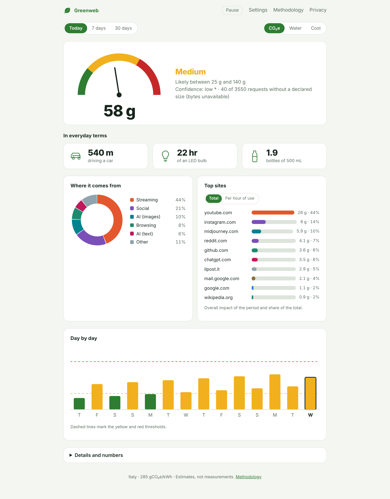
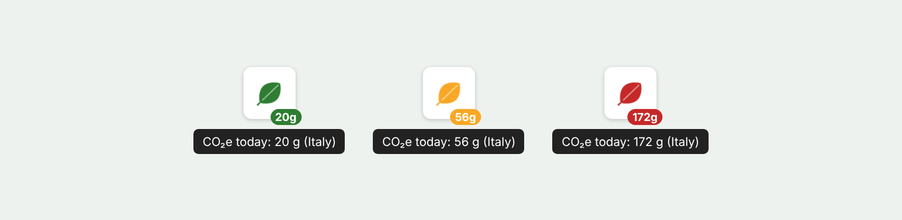
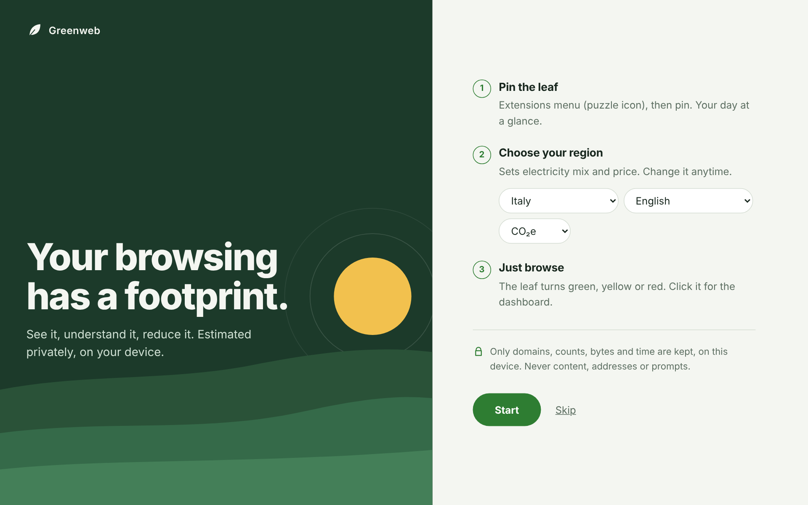
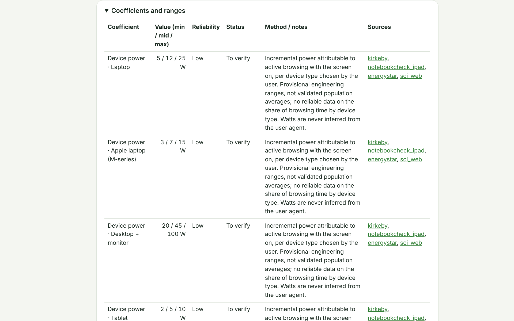
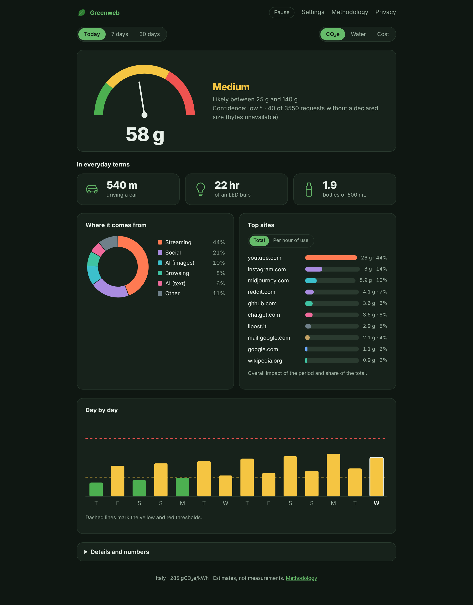
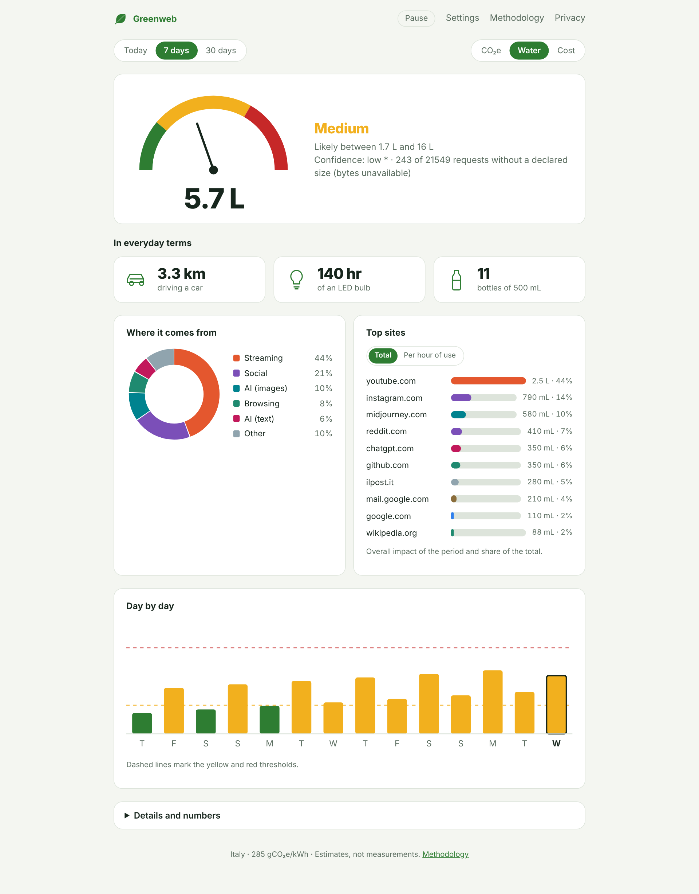
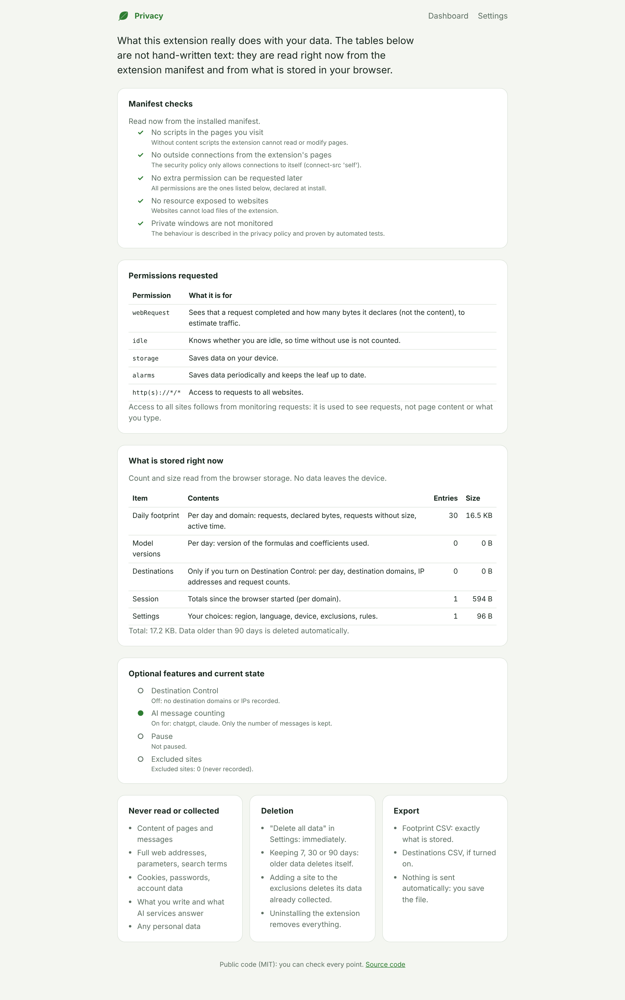

<title>Greenweb · See what your browsing costs the planet</title>
<meta name="description" content="Greenweb is a free, open-source browser extension that estimates the energy, CO₂e and water behind your browsing. Everything is calculated on your device. No account, no telemetry.">
<meta name="theme-color" content="#f3f6f2">
<meta property="og:title" content="Greenweb: see what your browsing costs the planet">
<meta property="og:description" content="Free, open-source extension. Energy, CO₂e and water of your browsing, estimated on your device with documented sources.">
<meta property="og:type" content="website">
<link rel="icon" href="img/leaf.png">
<link rel="stylesheet" href="https://fonts.googleapis.com/css2?family=Bricolage+Grotesque:opsz,wght@12..96,500;12..96,700&family=IBM+Plex+Sans:wght@400;500;600&family=IBM+Plex+Mono:wght@400;500&display=swap">
<style>
/* Calm, editorial landing page: green-tinted ground, real product frames, one printed-receipt block for the worked number. */
:root {
  --bg: #f3f6f2; --surface: #ffffff; --ink: #14211a; --muted: #55645b; --line: #d9e2d9;
  --leaf: #2e7d32; --leaf-ink: #ffffff; --leaf-soft: #e3f1e4; --band: #eaf0e9; --warn: #b26a00; --alert: #c62828; --code-bg: #e3ebe2;
  --shadow: 0 1px 2px rgba(20, 33, 26, .06), 0 12px 32px -8px rgba(20, 33, 26, .18);
  --glow-a: rgba(102, 187, 106, .30); --glow-b: rgba(255, 213, 79, .22);
  --display: "Bricolage Grotesque", "Segoe UI", system-ui, sans-serif;
  --body: "IBM Plex Sans", system-ui, -apple-system, "Segoe UI", sans-serif;
  --mono: "IBM Plex Mono", ui-monospace, "SFMono-Regular", Menlo, monospace;
}
@media (prefers-color-scheme: dark) { :root:not([data-theme="light"]) {
  --bg: #0f1712; --surface: #17221b; --ink: #e8f0e9; --muted: #9db0a2; --line: #2a3a2f;
  --leaf: #66bb6a; --leaf-ink: #0f1712; --leaf-soft: #1d3324; --band: #131d17; --warn: #ffcc80; --alert: #ef9a9a; --code-bg: #1c2a21;
  --shadow: 0 1px 2px rgba(0, 0, 0, .4), 0 12px 32px -8px rgba(0, 0, 0, .6);
  --glow-a: rgba(102, 187, 106, .16); --glow-b: rgba(255, 213, 79, .08); color-scheme: dark; } }
:root[data-theme="dark"] {
  --bg: #0f1712; --surface: #17221b; --ink: #e8f0e9; --muted: #9db0a2; --line: #2a3a2f;
  --leaf: #66bb6a; --leaf-ink: #0f1712; --leaf-soft: #1d3324; --band: #131d17; --warn: #ffcc80; --alert: #ef9a9a; --code-bg: #1c2a21;
  --shadow: 0 1px 2px rgba(0, 0, 0, .4), 0 12px 32px -8px rgba(0, 0, 0, .6);
  --glow-a: rgba(102, 187, 106, .16); --glow-b: rgba(255, 213, 79, .08); color-scheme: dark; }
* { box-sizing: border-box; }
img { max-width: 100%; height: auto; }
body { background: var(--bg); color: var(--ink); font: 17px/1.6 var(--body); margin: 0; -webkit-font-smoothing: antialiased;
  padding-left: env(safe-area-inset-left, 0px); padding-right: env(safe-area-inset-right, 0px); }
.wrap { width: 100%; max-width: 70rem; margin: 0 auto; padding-inline: 20px; min-width: 0; }
a { color: var(--leaf); }
h1, h2, h3 { font-family: var(--display); line-height: 1.08; text-wrap: balance; margin: 0; }
h1 { font-size: clamp(2.6rem, 6.4vw, 4.6rem); font-weight: 700; letter-spacing: -0.025em; }
h2 { font-size: clamp(1.8rem, 3.8vw, 2.6rem); font-weight: 700; letter-spacing: -0.015em; }
h3 { font-size: 1.15rem; font-weight: 700; }
p { margin: 0; max-width: 42rem; }
.eyebrow { font: 500 .78rem/1 var(--mono); letter-spacing: .14em; text-transform: uppercase; color: var(--leaf); }
.sub { color: var(--muted); font-size: 1.1rem; }
section { padding-block: clamp(3rem, 7vw, 5.5rem); display: grid; gap: 1.8rem; align-content: start; }
.band { background: var(--band); }
.band > .wrap, .band-in { display: grid; gap: 1.8rem; }
.head { display: grid; gap: .8rem; max-width: 44rem; }
.head.center { margin-inline: auto; text-align: center; justify-items: center; }

/* Top bar */
header.top { position: sticky; top: 0; z-index: 10; backdrop-filter: saturate(1.4) blur(12px); -webkit-backdrop-filter: saturate(1.4) blur(12px);
  background: color-mix(in srgb, var(--bg) 82%, transparent); border-bottom: 1px solid color-mix(in srgb, var(--line) 70%, transparent); }
header.top .wrap { display: flex; justify-content: space-between; align-items: center; gap: 1rem; padding-block: .7rem; }
.brand { display: flex; align-items: center; gap: .6rem; font: 700 1.1rem var(--display); text-decoration: none; color: var(--ink); }
.brand img { width: 30px; height: 30px; }
nav { display: flex; align-items: center; gap: 1.4rem; }
nav a:not(.btn) { text-decoration: none; color: var(--muted); font-size: .94rem; }
nav a:not(.btn):hover { color: var(--ink); }

/* Buttons */
.cta { display: flex; gap: .8rem; flex-wrap: wrap; align-items: center; }
.btn { display: inline-flex; align-items: center; gap: .5rem; padding: .8rem 1.3rem; border-radius: 10px; font-weight: 600; text-decoration: none; border: 1.5px solid var(--leaf);
  transition: transform .15s ease, box-shadow .15s ease, background .15s ease; }
.btn.primary { background: var(--leaf); color: var(--leaf-ink); box-shadow: 0 6px 16px -6px color-mix(in srgb, var(--leaf) 70%, transparent); }
.btn.primary:hover { transform: translateY(-1px); box-shadow: 0 10px 22px -8px color-mix(in srgb, var(--leaf) 80%, transparent); }
.btn.ghost { color: var(--leaf); background: transparent; }
.btn.ghost:hover { background: var(--leaf-soft); }
.btn.sm { padding: .5rem .95rem; font-size: .92rem; border-radius: 8px; }
.btn:focus-visible, a:focus-visible { outline: 3px solid var(--leaf); outline-offset: 3px; }
.status { font: 400 .84rem var(--mono); color: var(--muted); }

/* Hero */
.hero { position: relative; overflow: hidden; padding-block: clamp(2.5rem, 6vw, 5rem) clamp(3rem, 7vw, 5.5rem); }
.hero::before { content: ""; position: absolute; inset: -20% -10% auto -10%; height: 90%; z-index: -1; pointer-events: none;
  background: radial-gradient(40rem 26rem at 15% 20%, var(--glow-a), transparent 70%), radial-gradient(34rem 24rem at 90% 10%, var(--glow-b), transparent 70%); }
.hero-grid { display: grid; grid-template-columns: minmax(0, 1fr) minmax(0, 1.05fr); gap: clamp(2rem, 5vw, 4rem); align-items: center; }
.hero-copy { display: grid; gap: 1.5rem; }
.pill { display: inline-flex; align-items: center; gap: .5rem; width: fit-content; padding: .35rem .8rem; border-radius: 999px; background: var(--leaf-soft); color: var(--leaf);
  font: 500 .78rem var(--mono); letter-spacing: .06em; text-transform: uppercase; }
.pill i { width: .5rem; height: .5rem; border-radius: 50%; background: var(--leaf); display: block; }
.lead { font-size: 1.28rem; color: var(--muted); }
.trust { list-style: none; margin: 0; padding: 0; display: flex; flex-wrap: wrap; gap: .5rem 1.3rem; color: var(--muted); font-size: .92rem; }
.trust li { display: inline-flex; align-items: center; gap: .4rem; }
.trust svg { width: 1.05rem; height: 1.05rem; color: var(--leaf); flex: none; }
.hero-art { position: relative; }
.hero-art .crop { max-height: 31rem; }
.float { position: absolute; left: -1.2rem; bottom: -1.6rem; width: min(78%, 22rem); border-radius: 14px; border: 1px solid var(--line); box-shadow: var(--shadow); background: var(--surface); padding: .5rem; }
.float img { display: block; width: 100%; border-radius: 9px; }

/* Frames */
.frame { background: var(--surface); border: 1px solid var(--line); border-radius: 14px; overflow: hidden; box-shadow: var(--shadow); }
.frame .bar { display: flex; gap: 6px; padding: 10px 14px; border-bottom: 1px solid var(--line); background: var(--code-bg); }
.frame .bar i { width: 10px; height: 10px; border-radius: 50%; background: color-mix(in srgb, var(--muted) 45%, transparent); display: block; }
.frame img { display: block; width: 100%; height: auto; }
.crop { max-height: 34rem; overflow: hidden; }
.crop img { object-position: top; }

/* Cards */
.grid3 { display: grid; grid-template-columns: repeat(auto-fit, minmax(16rem, 1fr)); gap: 1.2rem; }
.card { background: var(--surface); border: 1px solid var(--line); border-radius: 16px; padding: 1.5rem; display: grid; gap: .6rem; align-content: start; transition: transform .2s ease, box-shadow .2s ease; }
.card:hover { transform: translateY(-2px); box-shadow: var(--shadow); }
.card { min-width: 0; }
.card p { color: var(--muted); font-size: .98rem; }
.ico { width: 2.6rem; height: 2.6rem; border-radius: 12px; background: var(--leaf-soft); color: var(--leaf); display: grid; place-items: center; margin-bottom: .3rem; }
.ico svg { width: 1.4rem; height: 1.4rem; }
.tag { width: fit-content; font: 500 .7rem var(--mono); letter-spacing: .08em; text-transform: uppercase; padding: .15rem .5rem; border-radius: 6px; background: var(--code-bg); color: var(--muted); }
.fact .num { font: 700 2.6rem/1 var(--display); color: var(--leaf); letter-spacing: -.02em; }

/* Steps */
.steps { display: grid; gap: clamp(2.5rem, 6vw, 4rem); counter-reset: s; padding: 0; list-style: none; margin: 0; }
.step { display: grid; grid-template-columns: minmax(0, 1fr) minmax(0, 1.5fr); gap: clamp(1.4rem, 4vw, 3rem); align-items: center; counter-increment: s; }
.step:nth-child(even) .txt { order: 2; }
.step .txt { display: grid; gap: .7rem; }
.step .txt::before { content: counter(s); width: 2.4rem; height: 2.4rem; border-radius: 50%; background: var(--leaf); color: var(--leaf-ink); display: grid; place-items: center; font: 700 1.05rem var(--display); }
.step .txt p { color: var(--muted); }
.pair { display: grid; grid-template-columns: repeat(auto-fit, minmax(18rem, 1fr)); gap: 1.4rem; }

/* Worked number */
.receipt { font: 400 .95rem/1.75 var(--mono); background: var(--surface); border: 1px solid var(--line); border-radius: 14px; padding: 1.6rem 1.8rem; overflow-x: auto; max-width: 46rem; box-shadow: var(--shadow); }
.receipt .row { display: flex; justify-content: space-between; gap: 2rem; white-space: nowrap; }
.receipt .rule { border-top: 1px dashed var(--line); margin-block: .6rem; }
.receipt .total { font-weight: 500; color: var(--leaf); }
.receipt .dim { color: var(--muted); }
.receipt .dim span { white-space: normal; }
.split { display: grid; grid-template-columns: minmax(0, 1fr) minmax(0, 1.2fr); gap: clamp(1.5rem, 4vw, 3rem); align-items: center; }
.split .copy { display: grid; gap: 1rem; }

/* Lists, tables */
ul.plain { margin: 0; padding-inline-start: 1.2rem; display: grid; gap: .5rem; max-width: 42rem; }
.cols2 { display: grid; grid-template-columns: repeat(auto-fit, minmax(18rem, 1fr)); gap: 1.4rem 2.4rem; }
.callout { border: 1px solid var(--line); border-inline-start: 4px solid var(--warn); border-radius: 14px; background: var(--surface); padding: 1.6rem 1.8rem; display: grid; gap: 1rem; }
table { border-collapse: collapse; width: 100%; font-size: .95rem; background: var(--surface); border: 1px solid var(--line); border-radius: 12px; overflow: hidden; }
th, td { text-align: start; padding: .8rem 1rem; border-bottom: 1px solid var(--line); vertical-align: top; }
th { font: 500 .78rem var(--mono); letter-spacing: .06em; text-transform: uppercase; color: var(--muted); background: var(--code-bg); }
tr:last-child td { border-bottom: 0; }
.scroll { overflow-x: auto; }
code { font-family: var(--mono); background: var(--code-bg); padding: .1em .35em; border-radius: 4px; font-size: .9em; overflow-wrap: anywhere; }
kbd { font-family: var(--mono); }

/* Get it */
.get { background: linear-gradient(160deg, var(--leaf-soft), var(--band)); border-block: 1px solid var(--line); }
.get .card { padding: 1.8rem; display: flex; flex-direction: column; gap: .7rem; }
.get .card .cta { margin-top: auto; padding-top: .8rem; }
.get h3 { font-size: 1.3rem; }
.get .steps-mini { margin: 0; padding-inline-start: 1.2rem; display: grid; gap: .45rem; color: var(--muted); font-size: .96rem; }
.get .note { color: var(--muted); font-size: .94rem; max-width: 44rem; }

footer { padding-block: 2.2rem 3rem; color: var(--muted); font-size: .9rem; display: grid; gap: .5rem; border-top: 1px solid var(--line); }
footer .links { display: flex; gap: 1.2rem; flex-wrap: wrap; }

@media (max-width: 900px) {
  .hero-grid, .split { grid-template-columns: minmax(0, 1fr); }
  .hero-art { margin-block-end: 1.8rem; }
  .float { left: 0; }
}
@media (max-width: 760px) {
  nav a:not(.btn) { display: none; }
  .lead { font-size: 1.12rem; }
  .step { grid-template-columns: minmax(0, 1fr); }
  .step:nth-child(even) .txt { order: 0; }
}
@media (prefers-reduced-motion: no-preference) { html { scroll-behavior: smooth; } }
@media (prefers-reduced-motion: reduce) { .card, .btn { transition: none; } .card:hover, .btn.primary:hover { transform: none; } }
</style>

<header class="top">
  <div class="wrap">
    <a class="brand" href="#top"> Greenweb</a>
    <nav>
      <a href="#features">What you get</a><a href="#how">How it works</a><a href="#number">The method</a><a href="#privacy">Privacy</a>
      <a class="btn primary sm" href="#get">Get Greenweb</a>
    </nav>
  </div>
</header>

<main id="top">
  <section class="hero">
    <div class="wrap hero-grid">
      <div class="hero-copy">
        <span class="pill"><i></i> Free · Open source · No account</span>
        <h1>See what your browsing costs the planet.</h1>
        <p class="lead">A small leaf in your toolbar estimates the energy, CO₂e and water behind what you do online. Everything is calculated on your device, and every number shows its range, its sources and its assumptions.</p>
        <div class="cta">
          <a class="btn primary" id="install" href="#get">Get Greenweb</a>
          <a class="btn ghost" href="#how">See how it works</a>
        </div>
        <span class="status" id="install-status">Early version · Firefox add-on live · Chrome, Edge and Brave by hand.</span>
        <ul class="trust" aria-label="Key facts">
          <li><svg viewBox="0 0 24 24" fill="none" stroke="currentColor" stroke-width="2" stroke-linecap="round" stroke-linejoin="round" aria-hidden="true"><path d="M5 12.5l4.5 4.5L19 7.5"/></svg>Runs on your device</li>
          <li><svg viewBox="0 0 24 24" fill="none" stroke="currentColor" stroke-width="2" stroke-linecap="round" stroke-linejoin="round" aria-hidden="true"><path d="M5 12.5l4.5 4.5L19 7.5"/></svg>No telemetry</li>
          <li><svg viewBox="0 0 24 24" fill="none" stroke="currentColor" stroke-width="2" stroke-linecap="round" stroke-linejoin="round" aria-hidden="true"><path d="M5 12.5l4.5 4.5L19 7.5"/></svg>MIT licensed</li>
        </ul>
      </div>
      <div class="hero-art">
        <div class="frame"><div class="bar"><i></i><i></i><i></i></div><div class="crop"></div></div>
        <div class="float"></div>
      </div>
    </div>
  </section>

  <section id="promises" class="band">
    <div class="wrap">
      <div class="grid3">
        <div class="card fact"><div class="num">0</div><h3>Requests sent by the extension</h3><p>No account, no server, no telemetry. Only a domain, request count, bytes and active time are kept, on your device.</p></div>
        <div class="card fact"><div class="num">min–max</div><h3>A range on every number</h3><p>Browsers cannot see server consumption, so the extension never pretends to measure. Each estimate carries its reliability level.</p></div>
        <div class="card fact"><div class="num">&lt;1%</div><h3>Of the energy it observes</h3><p>Its own footprint, estimated from a first measurement of CPU use. To be repeated on real laptops.</p></div>
      </div>
    </div>
  </section>

  <section id="features">
    <div class="wrap">
      <div class="head"><p class="eyebrow">What you get</p><h2>Understand your footprint, not just a number</h2><p class="sub">Simple on the surface, with the details one click away.</p></div>
      <div class="grid3" style="margin-top:1.8rem">
        <div class="card"><div class="ico"><svg viewBox="0 0 24 24" fill="none" stroke="currentColor" stroke-width="1.8" stroke-linecap="round" stroke-linejoin="round" aria-hidden="true"><path d="M5 19C5 10 10 5 20 4c0 10-5 15-14 15z"/><path d="M5 19c3-4 6-7 10-9"/></svg></div><h3>A leaf that tells you at a glance</h3><p>Green, yellow or red as the day grows, with a badge for CO₂e, water or cost. Thresholds are yours to adjust.</p></div>
        <div class="card"><div class="ico"><svg viewBox="0 0 24 24" fill="none" stroke="currentColor" stroke-width="1.8" stroke-linecap="round" stroke-linejoin="round" aria-hidden="true"><path d="M4 20V10M10 20V4M16 20v-7M21 20H3"/></svg></div><h3>A dashboard with the whole picture</h3><p>Today, 7 and 30 days, by activity and by site, with everyday equivalences like metres by car or hours of an LED bulb.</p></div>
        <div class="card"><div class="ico"><svg viewBox="0 0 24 24" fill="none" stroke="currentColor" stroke-width="1.8" stroke-linecap="round" stroke-linejoin="round" aria-hidden="true"><path d="M8 6h13M8 12h13M8 18h13"/><circle cx="4" cy="6" r="1"/><circle cx="4" cy="12" r="1"/><circle cx="4" cy="18" r="1"/></svg></div><h3>Which sites weigh the most</h3><p>A ranking by total impact or by hour of use, so a site you barely open does not hide the ones you live in.</p></div>
        <div class="card"><div class="ico"><svg viewBox="0 0 24 24" fill="none" stroke="currentColor" stroke-width="1.8" stroke-linecap="round" stroke-linejoin="round" aria-hidden="true"><rect x="3" y="4" width="18" height="12" rx="2"/><path d="M8 20h8M12 16v4"/></svg></div><h3>Your device, your region</h3><p>Pick the electricity profile (Italy, EU, USA, China, Japan, world) and enter your laptop's power and external monitor.</p></div>
        <div class="card"><div class="ico"><svg viewBox="0 0 24 24" fill="none" stroke="currentColor" stroke-width="1.8" stroke-linecap="round" stroke-linejoin="round" aria-hidden="true"><path d="M12 3l8 3v6c0 5-3.5 8-8 9-4.5-1-8-4-8-9V6z"/><path d="M9 12l2 2 4-4"/></svg></div><h3>Privacy you can check</h3><p>A Privacy page reads the extension's permissions and stored data live, so you do not have to take our word for it.</p></div>
        <div class="card"><span class="tag">Optional · off by default</span><div class="ico"><svg viewBox="0 0 24 24" fill="none" stroke="currentColor" stroke-width="1.8" stroke-linecap="round" stroke-linejoin="round" aria-hidden="true"><circle cx="6" cy="12" r="2.2"/><circle cx="18" cy="6" r="2.2"/><circle cx="18" cy="18" r="2.2"/><path d="M8 11l8-4M8 13l8 4"/></svg></div><h3>Destination Control</h3><p>See which providers (cloud, CDN) receive your requests, using a dataset bundled in the extension. Write rules and simulate them; nothing is blocked.</p></div>
      </div>
    </div>
  </section>

  <section id="how" class="band">
    <div class="wrap">
      <div class="head"><p class="eyebrow">From install to insight</p><h2>Four screens, no setup maze</h2></div>
      <ol class="steps" style="margin-top:1.8rem">
        <li class="step">
          <div class="txt"><h3>Pick your region</h3><p>On first run a welcome page asks for a region, a language and the metric to show. The region sets the electricity mix and price: Italy by default, plus EU, USA, China, Japan and the world average. Every value can be overridden.</p></div>
          <div class="frame"><div class="bar"><i></i><i></i><i></i></div><div class="crop"></div></div>
        </li>
        <li class="step">
          <div class="txt"><h3>Browse as usual</h3><p>The leaf turns green, yellow or red as the day's footprint grows, and the badge shows the figure in the metric you chose: CO₂e, water or cost. Thresholds are adjustable and are not presented as a scientific standard.</p></div>
          <div class="frame"></div>
        </li>
        <li class="step">
          <div class="txt"><h3>Open the dashboard</h3><p>One click on the leaf opens a visual dashboard: a gauge for the day, what it equals in everyday terms, where it comes from, the top sites and a day-by-day trend. Numbers and tables stay one click away.</p></div>
          <div class="frame"><div class="bar"><i></i><i></i><i></i></div><div class="crop"></div></div>
        </li>
        <li class="step">
          <div class="txt"><h3>Check the method</h3><p>The Methodology page is built from the same files the engine uses. Every coefficient lists its range, status (sourced, to verify or assumption) and links to its source.</p></div>
          <div class="frame"><div class="bar"><i></i><i></i><i></i></div><div class="crop"></div></div>
        </li>
      </ol>
    </div>
  </section>

  <section id="views">
    <div class="wrap">
      <div class="head"><p class="eyebrow">Light, dark, any metric</p><h2>Same data, the view you need</h2><p class="sub">The interface follows your system theme. Switch between today, 7 and 30 days, and between CO₂e, water and cost.</p></div>
      <div class="pair" style="margin-top:1.8rem">
        <div class="frame"><div class="bar"><i></i><i></i><i></i></div><div class="crop"></div></div>
        <div class="frame"><div class="bar"><i></i><i></i><i></i></div><div class="crop"></div></div>
      </div>
    </div>
  </section>

  <section id="number" class="band">
    <div class="wrap split">
      <div class="copy">
        <p class="eyebrow">One number, explained</p>
        <h2>How 48 minutes of video becomes 26 g of CO₂e</h2>
        <p class="sub">An example from the demo dashboard: a laptop, the Italian profile. Every line maps to a row in the Methodology page.</p>
      </div>
      <div class="receipt" role="group" aria-label="Worked calculation">
        <div class="row"><span>Device: 0.8 h × 12 W (laptop)</span><span>10 Wh</span></div>
        <div class="row"><span>Network + data center: 0.8 h × 100 Wh/h</span><span>80 Wh</span></div>
        <div class="rule"></div>
        <div class="row total"><span>Energy</span><span>90 Wh</span></div>
        <div class="row"><span>× 285 gCO₂e/kWh (Italy)</span><span>26 g CO₂e</span></div>
        <div class="row"><span>Water: data center 38 Wh × 0.30 + all 90 Wh × 4.5 L/kWh</span><span>420 mL</span></div>
        <div class="row"><span>× 0.311 €/kWh</span><span>€0.028</span></div>
        <div class="rule"></div>
        <div class="row dim"><span>Shown with its min–max range and a Medium reliability. The streaming reference is a realistic average deliberately rounded up.</span><span></span></div>
      </div>
    </div>
  </section>

  <section id="limits">
    <div class="wrap">
      <div class="callout">
        <div class="head"><p class="eyebrow" style="color:var(--warn)">What it cannot know</p><h2>Credibility before coverage</h2></div>
        <div class="cols2">
          <ul class="plain">
            <li>The real consumption of remote servers for each request.</li>
            <li>Whether a request to an AI service is a chat message or an image generation.</li>
            <li>The remote energy of AI video generation: no reliable coefficient yet.</li>
          </ul>
          <ul class="plain">
            <li>Requests whose size the server does not declare are counted apart, shown as missing data, and lower the reliability.</li>
            <li>Several values are marked <code>to verify</code> or <code>assumption</code>, and listed publicly.</li>
            <li>The model is a simplification, and the Methodology page says where it is weakest.</li>
          </ul>
        </div>
      </div>
    </div>
  </section>

  <section id="privacy" class="band">
    <div class="wrap split">
      <div class="copy">
        <p class="eyebrow">Privacy</p>
        <h2>Private by construction</h2>
        <div class="scroll"><table>
          <thead><tr><th>Kept on your device</th><th>Never collected</th></tr></thead>
          <tbody><tr>
            <td>Domain · number of requests · bytes · active time, per day, for 90 days</td>
            <td>Page content · full addresses · prompts · cookies · passwords · any personal data</td>
          </tr></tbody>
        </table></div>
        <p>Permissions are limited to observing requests (read-only), idle detection, local storage and a one-minute alarm. The extension's own security policy forbids any connection except to its own files, so it cannot send data out. You can pause tracking, exclude sites, choose how long data is kept (7, 30 or 90 days), export everything as a CSV, or delete it all. Private windows are never tracked.</p>
        <p>Two features are optional and off by default: counting how many messages you send to an AI service (only as a number) and Destination Control, which records the domains and IP addresses your requests go to, locally.</p>
      </div>
      <div class="frame"><div class="bar"><i></i><i></i><i></i></div><div class="crop"></div></div>
    </div>
  </section>

  <section id="get" class="get">
    <a id="try"></a>
    <div class="wrap">
      <div class="head center"><p class="eyebrow">Get Greenweb</p><h2>Free, and early: help me test it</h2><p class="sub">Version 0.1.1. It works fully on your device. On Firefox it is one click; on Chrome, Edge and Brave you install it by hand in about a minute.</p></div>
      <div class="grid3" style="margin-top:1.8rem; grid-template-columns: repeat(auto-fit, minmax(18rem, 1fr)); max-width: 52rem; margin-inline: auto; width: 100%">
        <div class="card">
          <h3>Firefox</h3>
          <p>On the official Mozilla add-ons site: one click, automatic updates.</p>
          <div class="cta"><a class="btn primary" href="https://addons.mozilla.org/firefox/addon/greenweb-footprint/">Add to Firefox</a></div>
        </div>
        <div class="card">
          <h3>Chrome, Edge, Brave</h3>
          <p>Not on the Chrome Web Store yet: download the zip and load it.</p>
          <ol class="steps-mini">
            <li>Unzip the file into a folder.</li>
            <li>Open <code>chrome://extensions</code> (Edge: <code>edge://extensions</code>) and turn on <em>Developer mode</em>.</li>
            <li>Press <em>Load unpacked</em> and choose the folder. Pin the leaf to the toolbar.</li>
          </ol>
          <div class="cta"><a class="btn primary" href="download/greenweb.zip" download>Download the zip</a></div>
        </div>
      </div>
      <p class="note" style="margin: 1.6rem auto 0; text-align: center">Nothing is sent anywhere: no account, no server, no telemetry. Values are estimates with a stated range, and some data are still being verified. <a href="https://github.com/ciao-madesign/greenweb/issues">Tell me what you find</a>: feedback on the numbers is the most useful thing you can send.</p>
    </div>
  </section>

  <section id="open">
    <div class="wrap">
      <div class="head"><p class="eyebrow">Open source</p><h2>Built to be checked and improved</h2></div>
      <div class="cols2">
        <ul class="plain">
          <li>MIT licensed. Please keep the copyright notice and consider citing the project.</li>
          <li>Languages today: English and Italian. A new language is one JSON file; Chinese and Japanese are structurally supported and need native review.</li>
        </ul>
        <ul class="plain">
          <li>Coefficients, domains and equivalences live in plain JSON files with sources.</li>
          <li>Reviews by energy and web-sustainability researchers are especially welcome.</li>
        </ul>
      </div>
      <div class="cta"><a class="btn primary" href="https://github.com/ciao-madesign/greenweb">View on GitHub</a><a class="btn ghost" href="https://github.com/ciao-madesign/greenweb/blob/main/docs/OPEN_QUESTIONS.md">Open questions</a></div>
    </div>
  </section>
</main>

<footer>
  <div class="wrap">
    <div>Greenweb v0.1.1 · MIT © Michele Aldeni</div>
    <div class="links"><a href="https://github.com/ciao-madesign/greenweb">GitHub</a><a href="https://github.com/ciao-madesign/greenweb/blob/main/PRIVACY.md">Privacy policy</a><a href="https://addons.mozilla.org/firefox/addon/greenweb-footprint/">Firefox add-on</a></div>
    <div>Screens in this page are real captures of the extension running with demo data.</div>
  </div>
</footer>

<script>
/* One button for every browser: it points to the right place for the visitor's browser. */
(function () {
  var STORES = { chrome: null, edge: null, firefox: 'https://addons.mozilla.org/firefox/addon/greenweb-footprint/' }; // fill with a store URL when a listing goes live
  var ua = navigator.userAgent, key = /Firefox\//.test(ua) ? 'firefox' : /Edg\//.test(ua) ? 'edge' : /Chrome\//.test(ua) ? 'chrome' : null;
  var names = { firefox: 'Firefox', edge: 'Edge', chrome: 'Chrome or Brave' };
  var btn = document.getElementById('install'), note = document.getElementById('install-status');
  if (!btn || !key) return;
  if (STORES[key]) { btn.href = STORES[key]; btn.textContent = 'Add to ' + names[key]; if (note) note.textContent = 'Free · one click · updates automatically'; }
  else if (note) note.textContent = 'Detected ' + names[key] + '. Early version: install from the zip, it takes about a minute.';
})();
</script>
